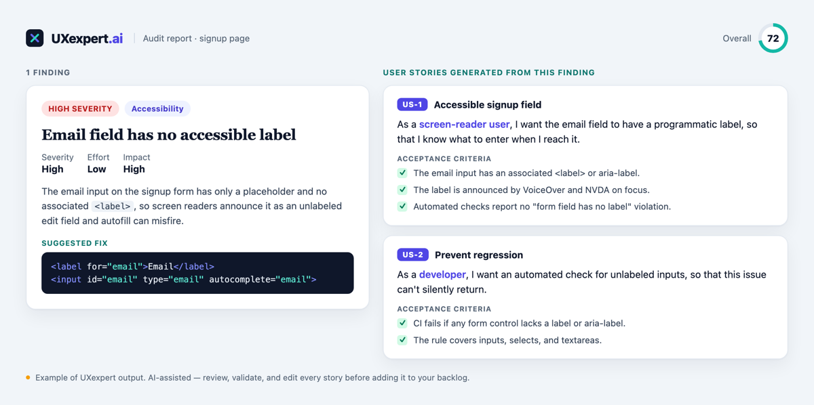

An audit that ends in a list of problems ends one step too early. "Contrast is low, the form field is unlabeled, the CTA is buried" tells you what's wrong — but a list of what's wrong isn't a plan, and it isn't something a developer can pick up and ship. The work that actually moves the product is the translation: from findings to a backlog.
That translation is real work, and it's usually where audits die. Someone has to reword each finding as something buildable, define what "done" means, decide the order, and get it into the tracker. It's tedious, it's easy to skip under deadline, and so the audit becomes a PDF nobody opens twice. The fix is to generate the backlog from the audit — turning each finding into a user story with acceptance criteria automatically.

Why a findings list isn't a backlog
A finding is a diagnosis. A backlog item is an instruction. The gap between them is exactly the part that requires judgment: who is affected, what specifically needs to change, and how you'll know it's fixed. Skip that translation and you get the two classic failure modes — findings so vague no one knows where to start, or a hundred equally-weighted items with no signal about what matters. Either way the report stalls, and the underlying problems ship to users anyway.
A finding tells you what's broken. A user story tells you what to build. The value is in the second sentence.
What a good user story adds
A well-formed story turns a problem into something a team can pick up, estimate, and verify. It adds three things a raw finding lacks:
- A user and a reason. "As a screen-reader user, I want the email field labeled, so that I know what to enter." Now the fix is anchored to a person and an outcome, not an abstract rule.
- Acceptance criteria. The testable definition of done — "the label is announced by VoiceOver," "automated checks report no unlabeled-field violation." This is what makes the story shippable and reviewable.
- Traceability. Each story points back to the finding that motivated it, so the "why" survives all the way to the pull request.
Good stories are also small, independent, and testable — the qualities that let a team actually flow them through a sprint instead of choking on one giant "improve accessibility" ticket.
From finding to story, step by step
Walk the example above. The audit finds an unlabeled email field — high severity, low effort, high impact — and suggests the exact markup fix. On its own, that's a diagnosis. Turned into a backlog, it becomes two stories: one for the fix itself (the accessible label, with criteria a QA engineer can check) and one to prevent regression (an automated guard so the issue can't silently return). Same finding, now a plan with a clear definition of done and an obvious owner.
Prioritize, then hand off
Because each story carries the finding's severity, effort, and impact, ordering the backlog is mechanical: highest impact and lowest effort first. From there it's a hand-off — export the stories to Jira, Notion, or wherever your team works, and they're ready to pull. The point is that the momentum from the audit doesn't leak out between "report delivered" and "ticket created."
Keep a human in the loop
Generated stories are a strong first draft, not a finished backlog. AI is excellent at the tedious translation — phrasing, criteria, structure — and it will occasionally miss context only you have, or propose criteria that don't fit your definition of done. Treat every story as something to review, trim, and adjust before it enters your sprint. You own the backlog; the tool just gets you 80% of the way there in seconds instead of an afternoon.
Where UXexpert fits
UXexpert.ai runs the review and the translation. After an audit, it can generate user stories with acceptance criteria straight from the findings — each tied back to its source — so you go from "here's what's wrong" to a prioritized, ready-to-work backlog in one workflow. User stories are live today for founding members; you review and export, staying the human in the loop.
Frequently asked
Can AI turn my design audit into user stories?
How do I convert UX findings into a developer backlog?
Is there a tool that writes user stories with acceptance criteria from a design review?
From audit to backlog in one pass
Run a free audit, then turn the findings into user stories you can ship.